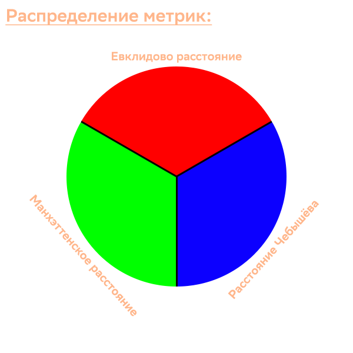

☀️Кластеризация
← На главную
🧽 Ластик
✖️ Очистить поле
▶️ Запустить алгоритм
Общие настройки
🔨 Метод кластеризации:
k-средних
DBSCAN
Иерархический
📏 Метрика:
Евклидова
Манхэттенская
Чебышёва
Всё везде и сразу
ℹ️ Что это значит?
Настройки k-средних и Иерархического
🌑 Кластеров:
Настройки DBSCAN
⭕ Радиус поиска точек:
100
ー Мин. кол-во точек кластера:
10

❌ Закрыть